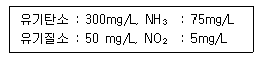
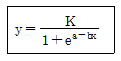
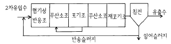
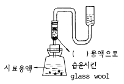
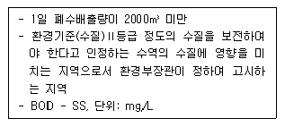

1과목: 수질오염개론
1. 내부기관이 발달되어 있지 않고 Bacteria에 가까우며 광합성을 하는 미생물로 엽록소가 엽록체 내부에 있지 않고 세포전체에 퍼져있는 것은? (단, 섬유상이나 군락상의 단세포로 편모없음)
2. 성층현상에 관한 설명으로 알맞지 않는 것은?
3. 환경미생물에 관한 다음 설명중 옳지 않은 것은?
4. 어떤 폐수를 분석하여 다음과 같은 결과를 얻었다. 이론적인 최종산소요구량은?

5. 우리나라 근해의 적조(red tide)현상의 발생 조건에 대한 설명으로 알맞지 않는 것은?
6. 다음 중 부영양화 현상을 억제하는 방법과 가장 거리가 먼 것은?
7. 호소수에서 발생되는 부영양화에 대한 설명으로 틀린 것은?
8. Colloid용액이 갖는 일반적인 특성으로 틀린 것은?
9. 다음은 물의 전도도(도전율)에 대한 설명이다. 이 중 잘못된 것은?
10. CaF2의 용해도적이 3.9×10-11일 때 용액 500mL에 녹아 있는 CaF2의 양(g)은? (단, CaF2의 분자량은 78 )
11. 다음은 진핵생물에 대한 설명이다. 틀린 것은?
12. 다음 중 박테리아 세포에서만 발견되는 기관으로 호흡에 관여하는 효소가 존재하는 것은?
13. 다음은 완충용액에 관한 내용이다. 옳지 못한 것은?
14. 수온이 20℃인 어느 하천은 대기로부터의 용존산소공급량이 0.06mgO2/ℓ -hr라고 한다. 이 하천의 평상시 용존산소 농도가 4.8mg/ℓ 로 유지되고 있다면 이 하천의 산소전달 계수는? (단, α , β 값은 각각 0.75이며, 포화용존산소농도는 9.2 mg/ℓ 이다.)
15. 다음은 물에 대한 설명이다. 틀린 것은?
16. 다음중 탄산의 전리상수(K)를 옳게 나타낸 것은? (단, 1단계와 2단계를 총괄한 반응식 기준)
17. 다음중 유사경도(pseudo-hardness)와 관련된 물질은?
18. 보통 농업용수의 수질평가시 SAR(sodium adsorption ratio)로 정의하는데 이에 대한 설명으로 틀린 것은?
19. 산소주입량을 구하기 위하여 먼저 물 속의 용존산소를 0 으로 만들려고 한다. 이를 위하여 용존산소가 포화(표준상태에서 포화농도를 9.07㎎/ℓ 로 가정)된 물에 소요되는 Na2SO3의 첨가량은? (단, Na: 23, S: 32, 완전 반응하는 경우로 가정함 )
20. 96hr TLm은 Cu가 2.0㎎/ℓ, CN-가 0.4㎎/ℓ, NH3가 4.0㎎/ℓ 이며 실제 혼합시험수에서 농도가 Cu 0.8㎎/ℓ, CN- 0.04㎎/ℓ, NH3 0.2㎎/ℓ 이었을 때 Toxic unit는?
2과목: 상하수도계획
21. 하천의 제내지나 제외지 혹은 호소부근에 매설되어 복류수를 취수하기 위하여 사용하는 집수매거에 관한 설명으로 알맞지 않는 것은?
22. 하수도의 기본계획에 관한 설명으로 틀린 것은?
23. 내경 1.5m인 강관에 압력이 10kgf/cm2의 물이 흐른다. 강재의 허용응력이 1500kgf/cm2일 때 강관의 최소 두께는?
24. 배수관(配水管)의 설계에서 최대 동수압은 가능한 한 몇 kg/cm2 이내로 계획하는 것이 바람직한가?
25. 다음 급수량 계산에 대한 설명 중 틀린 것은?
26. 원심력 펌프의 규정회전 N=10회/sec,토출량 Q= 50m3/min, 전양정 15m 일 때, 이 펌프의 비회전수는?
27. 정수장의 플록형성지에 관한 설명으로 틀린 것은?
28. 오수처리를 위한 관거계획에 관한 설명으로 틀린 것은?
29. 다음은 로지스틱(logistic)인구 추정공식이다. 기호 설명 중에서 틀린 것은?

30. 하천 표류수를 수원으로 할 때 기준으로 할 하천수량은 다음 중 어느 것인가?
31. 계획우수량 산정시 고려하는 확률년수로 알맞는 것은?
32. 펌프의 비속도(비교회전도)에 대한 다음의 설명 중 적합하지 아니한 것은?
33. 직경 1m의 원형콘크리트관을 하수가 흐르고 있다. 동수구배(I)가 0.01이고, 수심이 0.5m일 때 유속은? (단, 조도계수(n): 0.013, Manning 공식적용, 만관기준 )
34. 고도처리시설의 계획하수량(합류식하수도)으로 알맞는 것은?
35. 취수장에서 사용되는 pump의 흡입관 구경은? (단, 흡입구의 유속이 3m/sec이고, 계획 양수량은 14400m3/day 이다.)
36. 계획송수량과 계획도수량의 기준이 되는 수량은?
37. 다음 응집제 중 알카리도를 가장 크게 감소시키는 것은? (단, 응집제 1mg/L 주입 기준)
38. 상수관로의 길이 800m, 내경 200mm에서 유속 2m/s로 흐를때 관마찰 손실수두는? (단, Darcy-Weisbach 공식을 이용하며 마찰손실계수는 0.02)
39. 배수관에 사용되는 관종 중 '강관'의 특징에 관한 설명 으로 틀린 것은?
40. 펌프 선정에 대한 고려 사항중 잘못된 것은?
3과목: 수질오염방지기술
41. 실개천의 유량을 결정하기 위하여 농도가 1,000mg/L인 보존성 추적 물질을 1L/min의 비율로 주입하였다. 실개천 하류에서 추적물질의 농도가 2mg/L로 측정되었다면 실개천의 유량(m3/sec)은?
42. 유기인 함유폐수에 관한 설명으로 틀린 것은?
43. 혐기성공법 중 혐기성유동상의 장점이 아닌 것은?
44. 질산화 박테리아에 대한 다음 설명중 옳지 않은 것은?
45. 생물학적 인(P)제거와 가장 큰 관련이 있는 미생물은?
46. 폐수량이 10000m3/day이며 SS가 400mg/ℓ 침전지의 SS 제거율이 80%이며 침전슬러지의 함수율이 98%일 때 슬러지의 부피는? (단, 슬러지 비중은 1.0 으로 가정함)
47. 회전원판법의 일반적인 특징이라 볼 수 없는 것은?
48. 다음 분산 현상을 실험하는데 쓰이는 물질(추적자)중 분자량이 커서 침적생물 여상에 사용되는 것으로 가장 적절한 것은?
49. 어느 공장에서 500m3의 폐수(BOD=80mg/ℓ )를 매일 인근하천(유량 = 150,000m3/d,BOD = 2mg/ℓ )으로 방류하고 있다. 공장에서 생산하는 제품 1kg당 약 25L의 물이 소모된다. 공장 폐수 방류직후 하천과 완전혼합된 하천의 BOD를 4mg/ℓ 이하로 유지하고자 할 때 이 공장을 증설하여 별다른 수처리없이 1일 동안 생산 가능한 제품의 최대량은? (단, 법적상황은 고려하지 않음)
50. 시안(CN)계 폐수의 처리공법과 가장 거리가 먼 것은?
51. 분리막을 이용한 수처리의 방법과 구동력이 서로 잘못 짝지어진 것은?
52. 다음 응집제의 특성을 설명한 것중 틀린 것은?
53. 다음중 탈질소화 공정에서 일반적으로 탄소원 공급용으로 가해주는 화학약품은?
54. 하수의 3차 처리를 위한 생물학적공법중 '인' 제거만을 주목적으로 개발된 것은?
55. 아래 프로세스의 명칭으로 알맞는 것은?

56. 다음 조건하에서 Monod 식(Michaelis-Menten식 이용)을 사용한 세포의 비증식속도(Specific growth rate)는? (단, 제한기질농도 200mg/ℓ ,1/2포화농도 50mg/ℓ , 세포의 비증식속도 최대치 0.2hr-1)
57. 다음 식은 이온교환법을 이용한 수처리 과정이다. 어떤 단계를 나타내는가? [Ca+2+2Na · Ex ⇄ Ca · Ex2+2Na+1] (단, Ex: 이온교환 고형물 )
58. 활성슬러지 공법의 어느 폭기조의 유효용적이 1000m3, MLSS 농도는 3,000mg/L이고 MLVSS는 MLSS 농도의 75%이다 유입하수의 유량은 4000m3/day이고 합성계수 Y는 0.42mgMLVSS/mg제거 BOD, 내생분해계수 k는 0.08day-1, 1차 침전조 유출수의 BOD는 200mg/L, 처리장 최종 유출수의 BOD는 20mg/L일 때 슬러지 생성량은?
59. 현재 10℃로 운전되는 역삼투 장치로 하루에 760,000L의 3차 처리된 유출수를 탈염시키고자 한다. 요구되는 막면적은? (단, 25℃에서 물질전달계수=0.2068L/(day-m2)(kPa), 유입수와 유출수 사이의 압력차=2400kPa, 유입수와 유출수의 삼투압차=310kPa 최저 운전온도=10℃, A10° =1.2A25° )
60. 인이 16mg/L 포함된 폐수에서 인을 침전시키는데 실제로 필요한 액체명반의 량은? (단, - 실질적으로 인 1몰당 알루미늄 1.5몰이 필요함 (이론적으로는 1몰당 1몰이 필요함) - 유량은 10000m3/day, - 액체명반은 Al2(SO4)3 · 18H20 - Al 원자량:27, P 원자량: 31, - 명반순도 48%, - 액체명반용액의 단위중량 1281kg/m3 )
4과목: 수질오염공정시험기준
61. 원자흡광광도법을 이용한 비소의 정량에서 측정하는 비화수소는 다음 중 어떤 금속 분말을 넣어 발생시키는가?
62. 투명도의 측정방법에 관한 설명중 옳지 않은 것은?
63. 다음 그림은 비소시험장치(비화수소발생장치)이다. ( )안에 알맞은 물질은? (단, 흡광광도법 기준)

64. 음이온계면활성제를 측정하는 흡광광도법에서 음이온계면 활성제와 메틸렌블루가 반응하여 생성된 청색의 복합체를 추출하는데 사용하는 용액은?
65. 다음 중 시료 최대보존기간이 가장 긴 항목은? (단, 적절한 보존방법을 적용한 경우임)
66. 용존산소를 Winkler-Azide화 나트륨 변법에 의한 측정시 사용되는 황산의 작용으로 가장 적절한 것은?
67. 분원성 대장균군의 측정에 관한 설명으로 틀린 것은?
68. 다음 사항중 가스크로마토그래피의 기본 구성장치가 아닌 것은?
69. 부유물질이 적은 대형관내에서 효율적인 유량측정기기로서 왼쪽관은 정수압, 오른쪽관은 0인 상태인 정체압력을 마노미터에 나타나는 수두차에 의해 유속이 계산되는 관내의 유량측정방법은?
70. 산화성물질이 함유된 시료나 착색된 시료에 적합하며 특히 윙클러-아지드화나트륨 변법에 사용할 수 없는 폐하수의 용존산소 측정에 유용하게 사용할 수 있는 측정법은?
71. 플루오르(불소)를 란탄-알리자린 콤프렉손법(흡광광도법)으로 분석할 경우, 알루미늄 및 철의 방해영향은 어떠한 실험과정에 의하여 제거 되는가?
72. pH 표준액의 pH 값이 0℃에서 제일 큰(높은) 값을 나타내는 표준액은?
73. 데발다합금 환원증류법으로 측정할 수 있는 항목은?
74. 흡광광도법으로 폐수 중 크롬을 분석할 때 사용하지 않는 시약은?
75. 폐수처리 process에서의 유입수 및 그 유출수의 COD를 측정하기 위해 유입수는 시료 5㎖, 유출수는 시료 50㎖에 각각 물을 가하여 100㎖로서, COD를 측정했을 때 N/40 과망간산칼륨 용액의 적정치는 각각 5.2㎖와 4.7㎖였다. COD 제거율은 몇 %인가? (단, N/40 과망간산 칼륨 용액의 역가는 1.000이며 공시험치는 0.2㎖이다.)
76. 흡광광도법에 의한 CN량 측정시 시료에 함유된 황화합물을 제거하기 위해 사용하는 시약은?
77. 다음 중 유기질소 화합물 및 유기염소 화합물을 선택적으로 검출할 수 있는 가스크로마토그래피법용 검출기는?
78. 수질오염공정시험방법상 6가 크롬측정과 가장 거리가 먼 것은?
79. 온도의 영향이 있는 공정시험의 판정은 다음 중 어느 것을 기준으로 하는가?
80. 다음 중 수질오염공정시험방법상 시료의 보존방법이 다른 항목은?
5과목: 수질환경관계법규
81. 시· 도지사는 관할구역안의 오염원 등에 대한 조사를 몇 년마다 실시하여야 하는가?
82. "환경관리인을 두어야 하는 사업장의 범위 및 환경관리인의 자격기준, 임명기간은 ( )으로 정한다." ( )안에 알맞는 내용은?
83. 폐수종말처리시설 기본계획에 포함되지 않는 사항은?
84. 다음 조건에서 적용되는 오염물질의 배출허용기준은?

85. 환경부장관이 호소수질보전구역지정시 고려하여야 하는 사항과 가장 거리가 먼 것은?
86. [ 폐수라 함은 물에 ( )의 수질오염물질이 혼입되어 그대로 사용할 수 없는 물을 말한다. ]( )안에 알맞는 내용은? (단, 수질환경보전법상 폐수에 대한 용어 정의임)
87. 기본부과금산정시 방류수수질기준 초과율이 20%이상 30%미만인 경우에 부과계수는?
88. 공동방지시설을 설치하고자 하는 때에 사업자가 제출하여야하는 서류와 가장 거리가 먼 것은? (단, 배출시설설치허가,신고를 하지 않은 사업자의 경우)
89. 종말처리시설종류별 배수설비의 설치방법 및 구조기준에 관한 설명으로 틀린 것은?
90. 다음중 수질오염의 실태를 파악하기 위한 측정망의 위치, 범위, 구역 등을 명시한 수질오염측정망 설치계획에 포함 되지 않는 사항은?
91. 배출시설 변경신고에 따른 가동개시신고 대상과 가장 거리가 먼 것은?
92. 오염물질의 배출허용기준 지역구분에 해당되지 않는 것은?
93. 폐수배출시설에서 채취한 오염물질이 배출허용기준에 적합한지 여부를 검사할 수 있는 기관이 아닌 곳은?
94. 특정수질유해물질에 해당되지 않는 것은?
95. 배출부과금을 부과할 때 고려할 사항이라 할 수 없는 것은?
96. 다음은 하천의 수질환경기준에서 상수원수 3급, 수산용수 2급, 공업용수 1급에 적용되는 기준이다. 맞는 것은?
97. 초과부과금의 부과대상이 되는 오염물질이 아닌 것은?
98. 개선명령을 받지 아니한 사업자가 개선계획서을 제출하여 개선하는 경우와 가장 거리가 먼 것은?
99. [환경분야의 교육은 ( ① )마다 ( ② )이상 이수하여야하며 교육과정의 기간은 ( ③ )이내로 한다.] ( )안에 알맞는 것은? ( 순서대로 ① - ② - ③ )
100. 배출시설의 가동개시신고를 하지 아니하고 조업한 자에 대한 벌칙기준으로 적절한 것은?